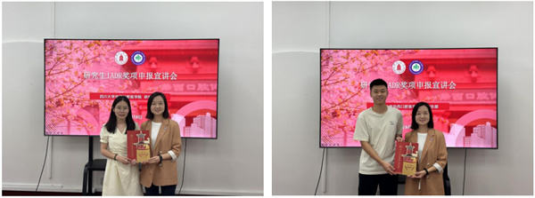

学生会 · 校园活动
“学术扬帆，启航国际”研究生IADR奖项申报宣讲会成功举办
发布时间：2025/09/18
为进一步激发研究生参与国际学术交流的热情，提升我院青年学子的国际竞争力，2025年9月16日下午，由华西口腔医学院研究生部、研究生会联合主办的“学术扬帆，启航国际”研究生IADR奖项申报宣讲会在华西校东区第四教学楼顺利举行。本次活动吸引了众多对国际学术交流感兴趣的研究生踊跃参加。 活动伊始，研究生部副部长向琳老师致辞表示，推动国际学术交流、助力学子走向世界，是我院研究生培养的重点工作之一；同时，向老师鼓励同学们珍惜并抓住机遇，勇敢迈向国际舞台展现风采。 本次论坛特别邀请了2023级博士研究生周陶和2023级硕士研究生刘泽锦作为嘉宾分享IADR申奖经历与现场评奖体会，为在座同学剖析申报要点、传递宝贵经验，并具体讲解了IADR奖项申报准备、材料重点等注意事项，帮助同学们更全面地了解申奖路径与机遇。 活动中，研究生部冯捷老师详细介绍了IADR申报方式、流程及截止节点，为即将申报的同学提供了细节指导。研究生部文玥老师围绕我院“扬帆计划”资助项目进行了深入解读，鼓励研究生积极争取学术资助与交流机会。 本次活动为研究生搭建了朋辈交流平台，同学们纷纷表示收获良多，更加坚定了参与国际学术交流、展示自我的信心,我院亦将持续为推动研究生迈向国际学术舞台做好服务与支撑工作。
